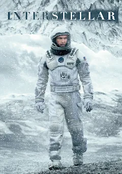
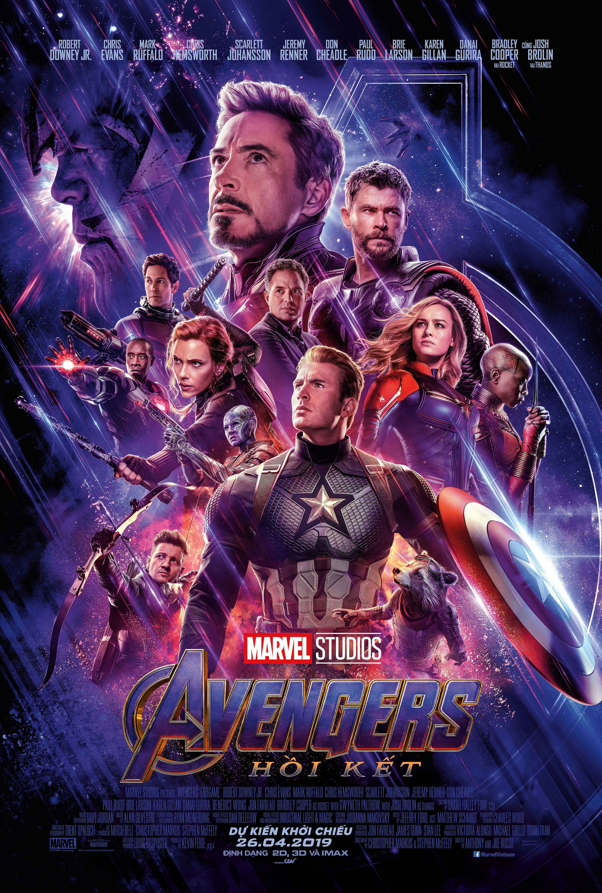
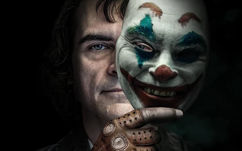
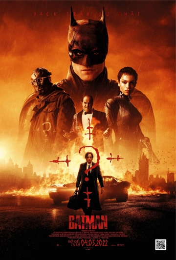
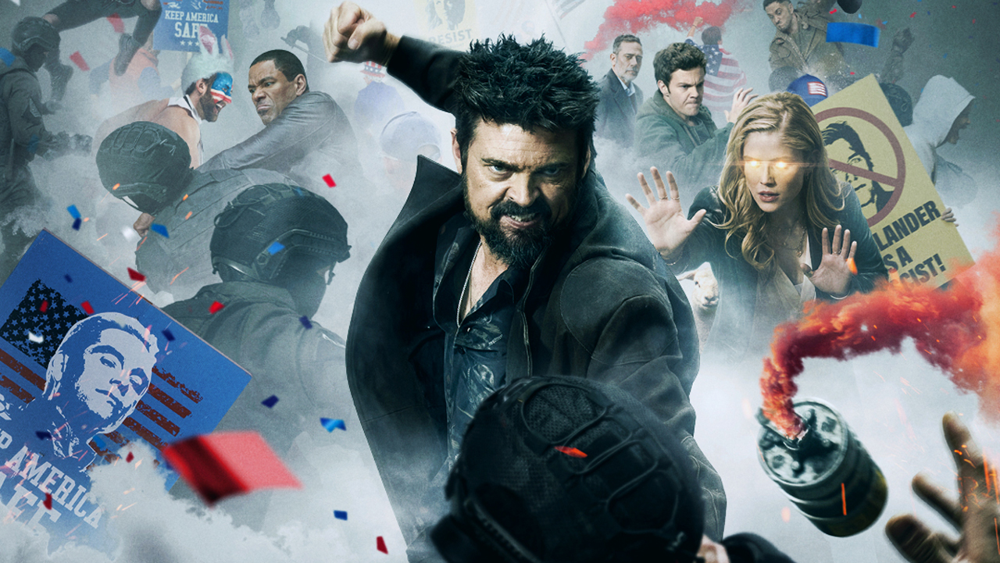

Bộ phim khoa học viễn tưởng đỉnh cao của Christopher Nolan, kể về hành trình khám phá không gian để cứu lấy loài người.

Trận chiến cuối cùng của các siêu anh hùng Marvel chống lại Thanos.

Hành trình biến đổi tâm lý đầy ám ảnh của Arthur Fleck thành Joker.

Batman đối đầu với tên sát nhân hàng loạt Riddler tại Gotham.

The Boys - Season 4 tiếp tục câu chuyện về nhóm siêu anh hùng phản diện và những vấn đề xã hội mà họ đối mặt.